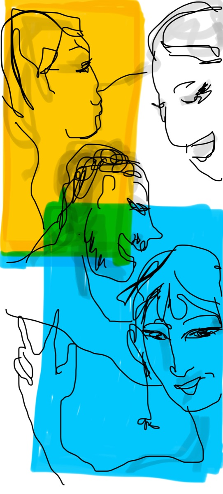
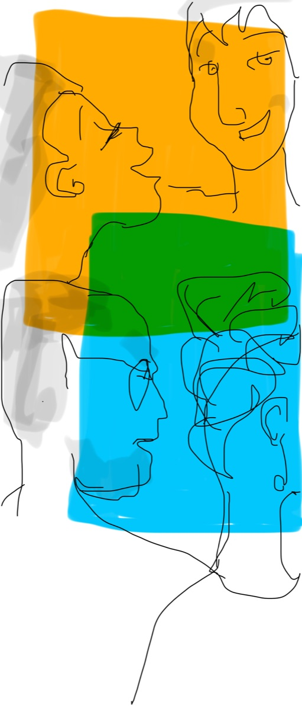

On fait le point sur vos RH et votre RSE, sans jargon
8 expertises RH, une approche concrète et sur mesure. Du diagnostic à l'accompagnement, on vous aide à y voir clair. Des centaines de dirigeants accompagnés depuis 2003.


Diagnostic & accompagnement
On vient sur le terrain comprendre vos pratiques RH et RSE, puis on co-construit un plan d'action concret — et on avance avec vos équipes jusqu'à sa mise en œuvre. Nos interventions sont co-finançables (OPCO ou Région).
- Diagnostic terrain de vos pratiques
- Plan d'action priorisé et co-construit
- Recrutement, compétences, RSE et qualité de vie au travail

Conduite de projet
Réorganisation, croissance, fusion : on pilote vos transformations avec méthode et avec vos équipes, pour que le changement tienne dans la durée. Besoin d'un accompagnement dans la durée pour porter le projet ? On en parle.
- Cadrage et diagnostic du projet
- Accompagnement des managers et des équipes
- Dialogue social et communication interne
Coaching individuel & collectif
Un espace pour prendre du recul, clarifier ses objectifs et débloquer ses leviers de progression — pour les dirigeants, les managers et les équipes, dans le respect d'une déontologie professionnelle du coaching.
- Coaching individuel de dirigeant
- Coaching collectif d'équipe
- Prise de poste et posture managériale
Coachings flashs
Besoin d'un coup de pouce ponctuel ? Une séance courte et ciblée, sans engagement, pour avancer sur une situation précise. Créneaux dédiés, inscription simple.
- Séances courtes, sur des créneaux dédiés (midi ou soir)
- Un échange de qualification de 15 minutes
- Avec ou sans accompagnement régulier

Co-développement : animation de cercles
On anime vos cercles de co-développement : un cadre structuré et bienveillant où vos managers apprennent les uns des autres et résolvent leurs problématiques concrètes. On peut aussi vous apprendre à les mettre en place.
- Animation de cercles entre pairs
- Méthode éprouvée d'intelligence collective
- Mise en place du dispositif chez vous
Co-développement : supervision
Vous avez déjà des animateurs internes ? On supervise leur pratique pour les faire monter en compétence — et on peut animer des cercles inter-entreprises.
- Supervision des animateurs internes
- Montée en compétence des facilitateurs
- Cercles inter-entreprises (en option)

Profils de comportement & motivation
Mieux se connaître pour mieux recruter, manager et coopérer. On vous accompagne avec des outils reconnus de profilage comportemental et motivationnel, suivis d'une restitution.
- DISC, MBTI, Forces Motrices
- Évaluation puis restitution accompagnée
- Recrutement, cohésion d'équipe, développement des managers

Formation
Organisme certifié Qualiopi, nos formations sont participatives et ancrées dans vos situations réelles — management, droit social, recrutement, RSE. Une seule formation certifiante : CléA Management.
- Sur mesure ou au catalogue
- En intra, partout en France et en Europe
- CléA Management, notre formation certifiante
Ressources liées
Des contenus actionnables pour préparer votre diagnostic et structurer vos pratiques RH.
Checklist auto-diagnostic RH
40 questions pour évaluer la maturité de votre politique RH en 15 minutes.
Découvrir la checklist →Le guide RH du dirigeant de PME
25 pages d'essentiel : obligations légales, bonnes pratiques, outils concrets.
Télécharger le guide →Templates et modèles RH
Grilles d'entretien, fiches de poste, modèles d'accord — prêts à l'emploi.
Voir les templates →Un besoin spécifique ? Parlons-en.
Chaque intervention est conçue sur mesure. Contactez-nous pour un premier échange sans engagement.
Nous contacter